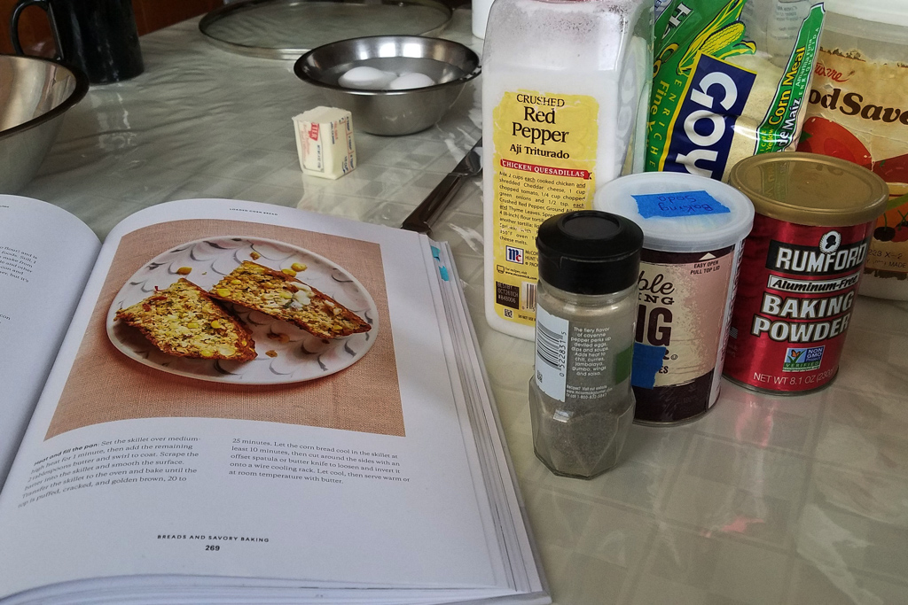
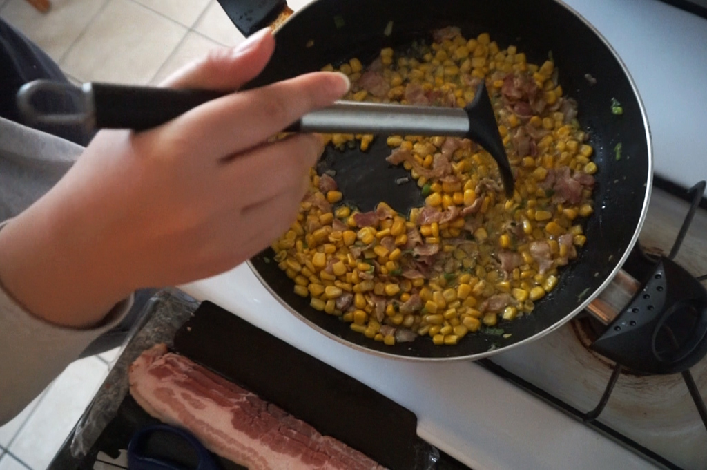
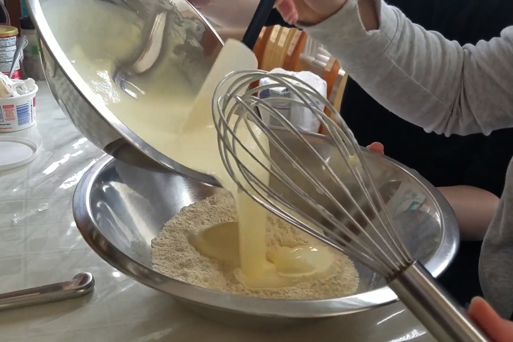
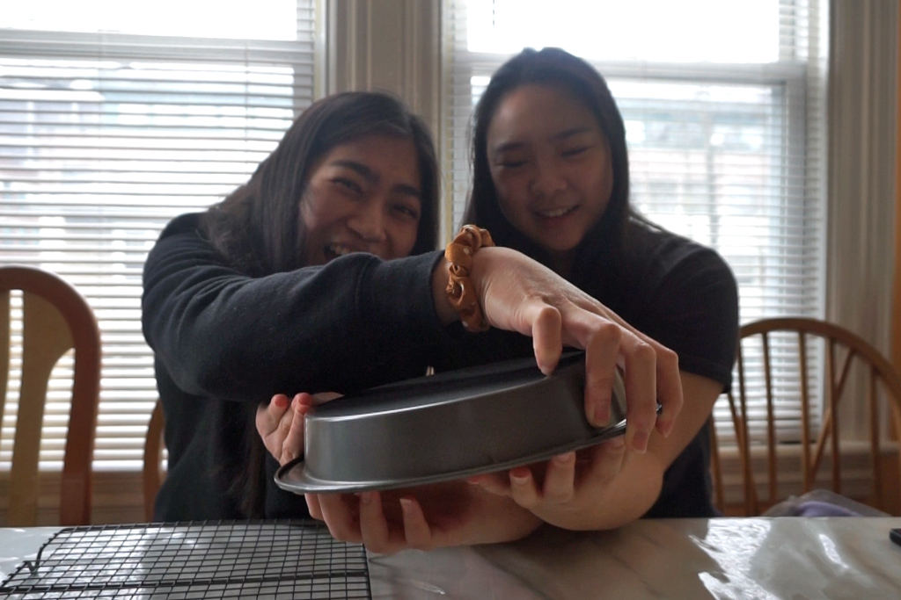
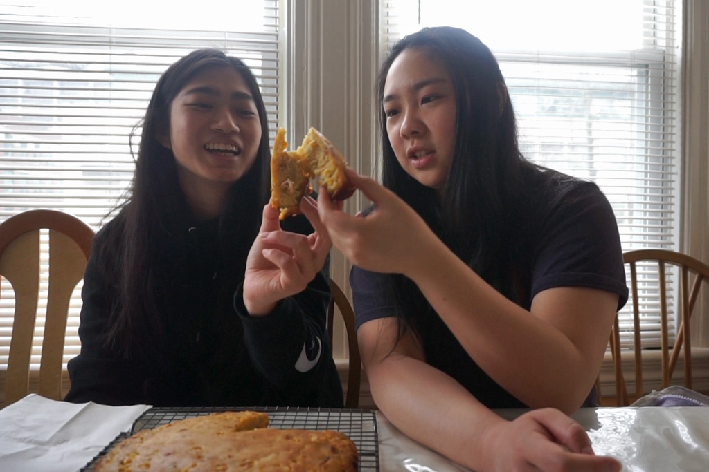
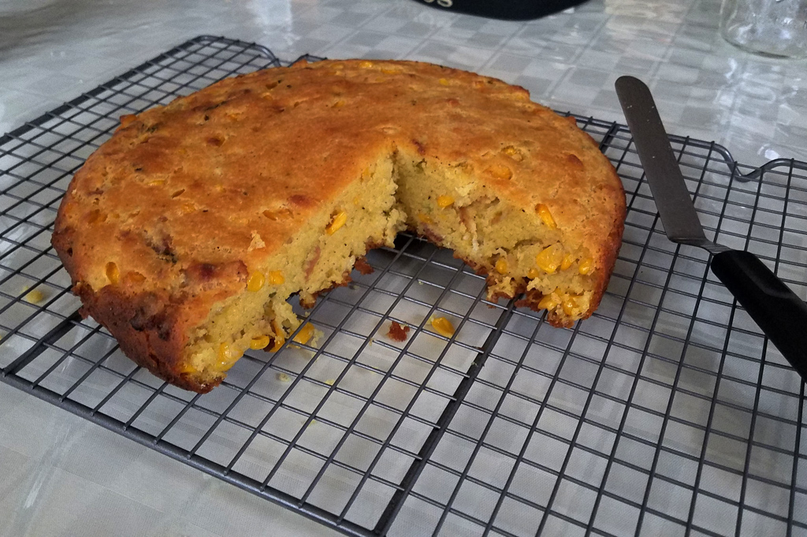

Loaded Cornbread from Dessert Person
Mar 11 - Written by Bonnie and Emily
Cornbread, it’s one of those foods that you either like or don’t like. We’re both not huge fans of cornbread but on occasion, we’d enjoy a nibble.
So why are we making cornbread if we don’t like cornbread? Well, how could we resist a loaded cornbread filled with corn, bacon, scallions, and if you have them, jalapenos! On top of that, it's another delicious recipe from our favorite, Claire Saffitz’s cookbook, Dessert Person. Not to mention that this is our first stab at a savory recipe too! We know how irresistible bacon and corn is and so it only made sense to give the ole cornbread another shot.
This recipe is fairly simple and quick to throw together. With everything chopped and prepped, all you have to do is cook the bacon and all the aromatics in a pan, measure out the dry and wet ingredients and then combine everything into a pan and bake. If you have a cast iron, then this makes it even easier because it's one less pan to wash. We didn’t have a cast iron pan so we had to cook and bake in separate pans.
The bacon and corn mixture smelled absolutely delicious and if we weren’t making cornbread, we would’ve just stopped there, sprinkled some mozzarella, and eaten the corn and bacon as is. If you love bacon, don’t skimp on the number of slices. Claire suggests doing 3 to 4 slices of bacon so we of course had to put the maximum amount. Now since we were baking the cornbread in a separate pan than the one we cooked everything in, we made sure to scrape in every last bit of corn and bacon grease to get all that delicious flavor.
With everything added and well combined together, it was time to bake! Make sure you’re folding all your ingredients instead of mixing it like we did! We baked our cornbread for about 20-25 minutes and it came out perfectly golden brown.
After letting it cool, it was time to flip it out onto a cooling rack, or in this case Bonnie’s hands, and give it a taste. With the amount of butter we used to grease the pan, we thought it would flip out easily but that wasn’t the case. We had to give the pan a few shakes before the cornbread released from the bottom of the pan and even then, we lost a bit to the bottom of the pan.
This loaded cornbread still had the taste and feel of cornbread but it wasn’t dry and the added ingredients added so much more flavor to it. Emily liked it but found that this cornbread was a bit spongy which she wasn’t sure if that was how it was supposed to be, but it made her wonder if it was due to the amount of butter/oil that was in the cornbread. Nevertheless, you cannot go wrong with bacon and corn so this cornbread is definitely something she’d make again. Bonnie’s initial reaction was that it was delicious and she liked that it felt a bit cakier than the traditional cornbread. She agreed it was a bit spongy but she didn’t mind it at all and went for a second slice.
*Something we noticed later on after letting the cornbread cool some more was that when we sliced it open, the interior was a lighter shade of yellow and no longer looked as spongy. We weren’t sure what caused this or why it happened but the side with a lighter shade tasted a little less spongy, which is why we think we may not have mixed the batter into the pan evenly since it was coated with so much butter. But, spongy or crumbly, it was all still delicious and flavor packed!